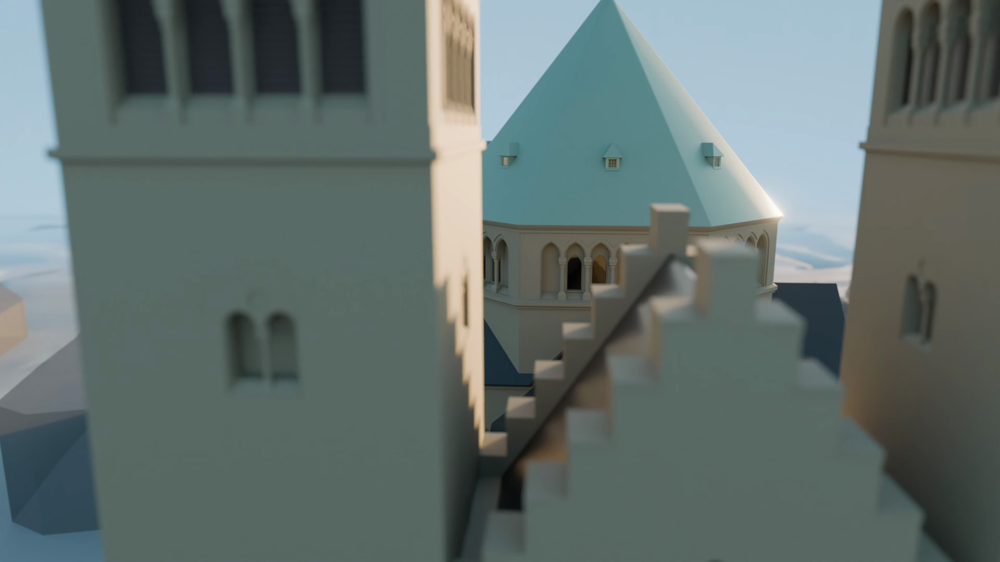
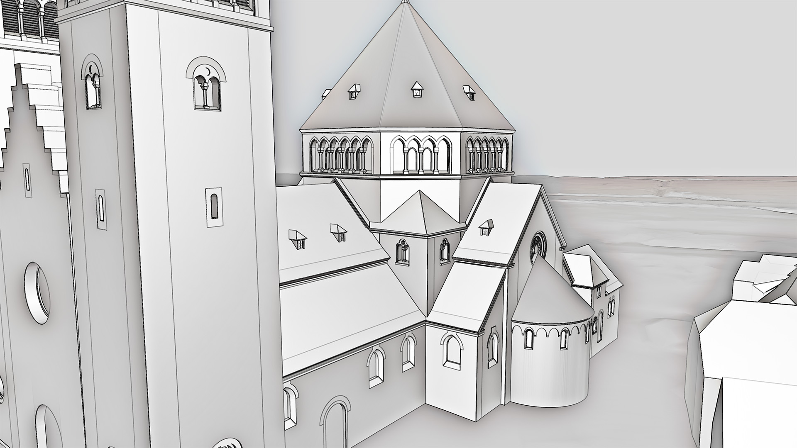

Animationsfilm - Baugeschichte der Kirche in Osterwick (Rosendahl)
Persönliches Projekt
Für den Heimatverein in Osterwick (Rosendahl) konnte ich in Zusammenarbeit mit der pro-t-in GmbH
aus Lingen einen Animationsfilm umsetzen. Meine Aufgaben bestanden unter anderem im
Storyboarding, dem Erstellen von Zeichnungen, 3D-Modellierung und dem Rendering der animierten
Filmelemente.
Link zum Heimatverein in Osterwick

